Сайт 2005 года сделан так, как тогда делали все: HTML руками, таблицы вместо вёрстки, фиксированные позиции в пикселях, разметка VML, оставшаяся от Word, гиф-флажки для переключения языка и маленький анимированный домик, который возвращал на главную с любой страницы. Он был написан на двух языках, вручную, дважды.
Он охватывает остров с огромной подробностью: образование, спорт, еду, погоду, транспорт, политическое устройство, язык, праздники и около тридцати отдельных достопримечательностей — каждая на своей странице со своей фотографией. Он оставлен нетронутым: все 168 страниц, включая те, что больше не работают.
Всё, что вы читаете сейчас, пересобрано из него. Цвета взяты с оригинальной фотографии пейзажа, структура разделов повторяет исходное меню, а домик в углу каждой страницы — тот самый GIF. Отличаются инструменты: современные HTML и CSS, фотографии с ясными лицензиями и русская версия, строка в строку совпадающая с английской.
Исходная графика
Часть оригинальной графики в исходном размере. Именно из этих изображений и был сделан сайт 2005 года.

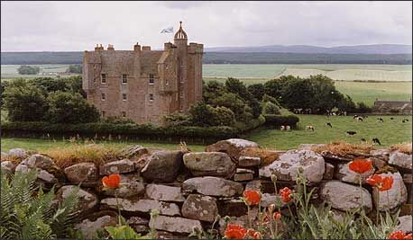
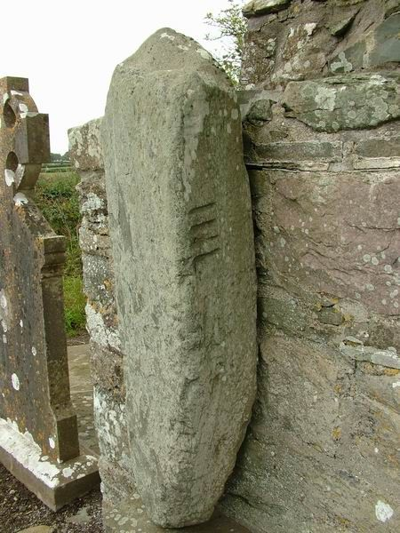
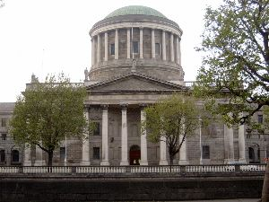
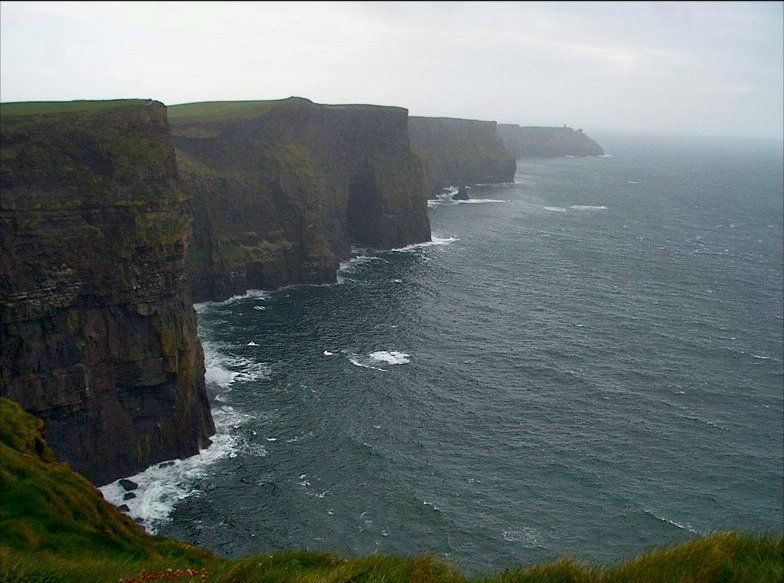
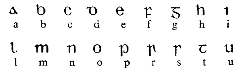

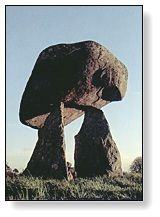
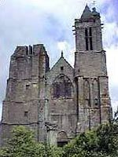
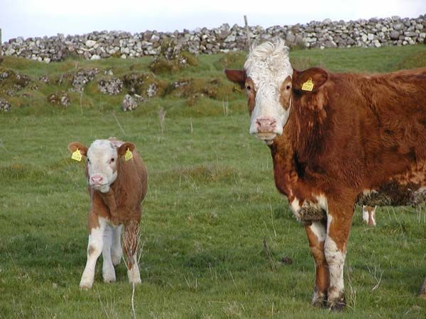
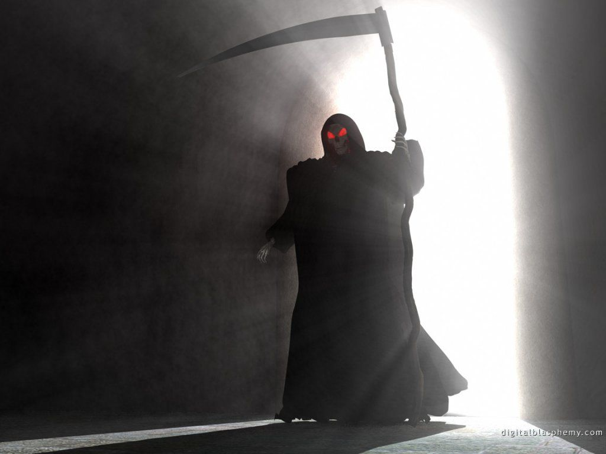
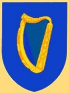
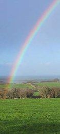

Полный архив
Полный сайт 2005 года отдаётся без изменений по адресу /archive/ — 168 страниц на английском и русском с оригинальными изображениями. Одна дублирующая папка из репозитория, на которую ничто не ссылается, исключена; ничего из того, что связано со сайтом, не потеряно.
Где искать
- /archive/index.htm — главная версии 2005 года
- /archive/eng/menu.html — английское меню
- /archive/rus/menu.html — русское меню
- /archive/eng/main/main.htm — стихотворение о Ирландии